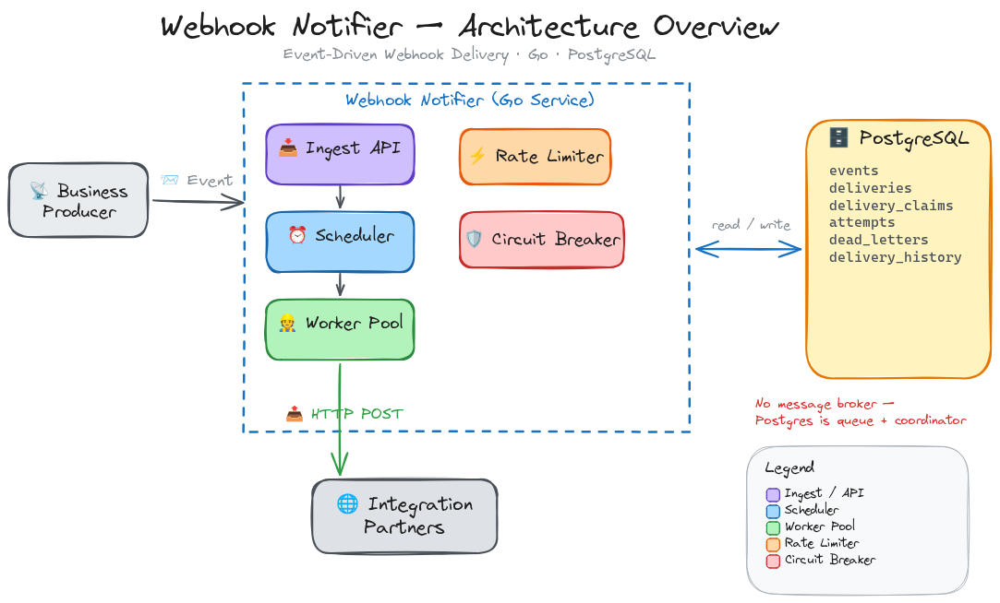
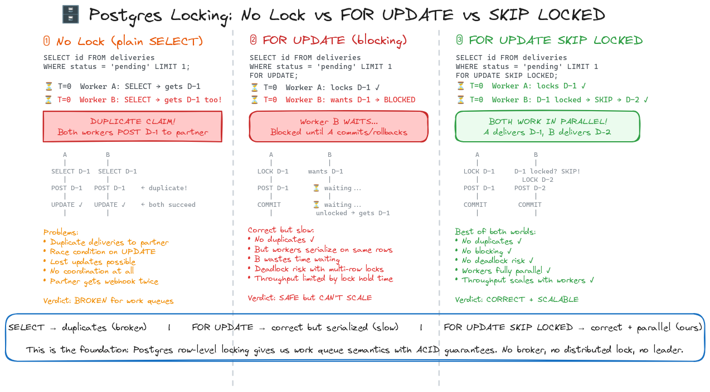
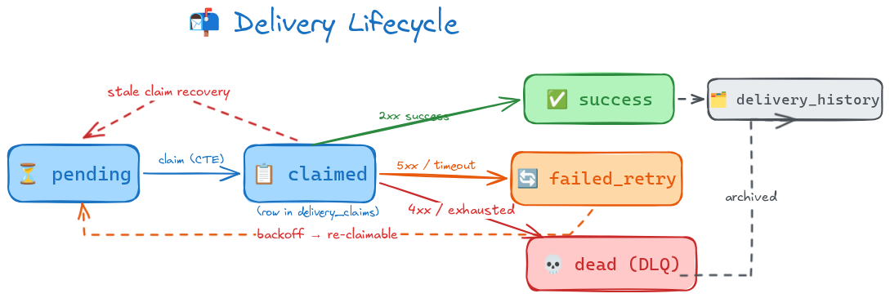
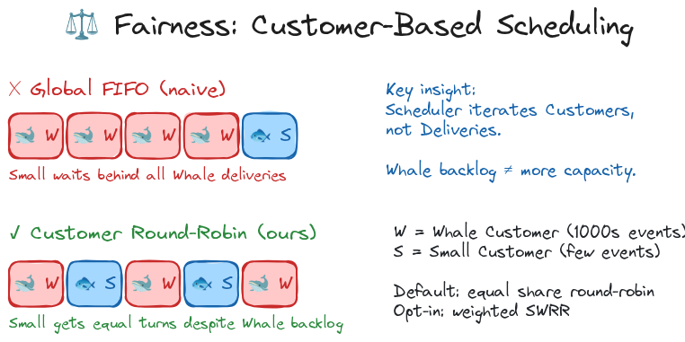
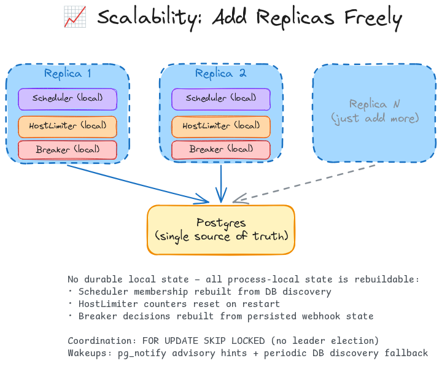
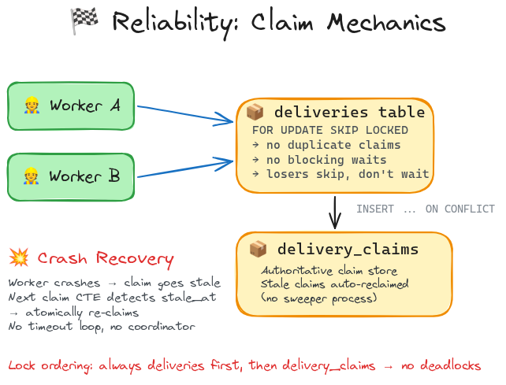
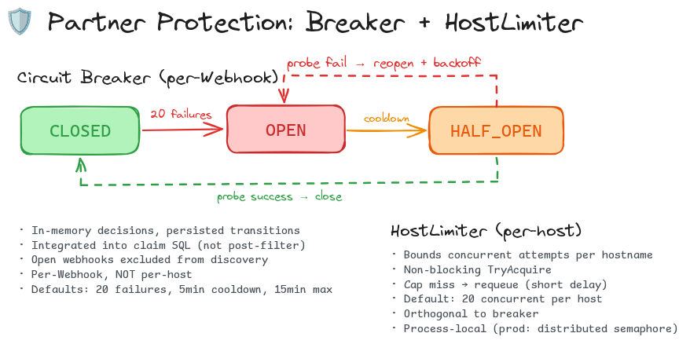

Pair session presentation ⚙️
Webhook Notifier
A webhook delivery system where reliability, scale, and fairness are designed together.
Go + Postgres. No broker. Horizontal workers. Queue bullies not invited.
Fairness is the design center, not an add-on.
Postgres handles durable work and worker coordination.
Benchmarks prove the trade-offs instead of hiding them.
The actual problem
Sending HTTP is easy. Keeping tenants fair under load is the hard part.
The system shape
Postgres = queue + coordination point
The keystone 🔑
The design bet: let Postgres coordinate workers atomically.
- Plain SELECT duplicates work.
- FOR UPDATE is correct but blocks.
- SKIP LOCKED skips busy rows and keeps workers moving.
- Claim rows let stale workers recover atomically.

One Event becomes durable work
At-least-once
Core insight ⚖️
The fairness move: schedule Customers, not individual Deliveries.
- Global FIFO lets Whale traffic dominate the room.
- Customer round-robin gives each Customer a turn.
- More Webhooks increase backlog, not scheduling share.
- Measure fairness with Small-vs-Whale P95 first-attempt latency.


Horizontal scaling
Scale-out stays boring: add replicas, keep state in Postgres.
- No leader election.
- No partition ownership transfer.
- Scheduler membership rebuilds from DB discovery.
- In-flight Claims recover through lease expiry.
Reliability mechanics
Reliability comes from the claim boundary, not a background sweeper.
- Select candidates with SKIP LOCKED.
- Insert ownership into delivery_claims.
- Reclaim stale Claims only when the lease expired.
- No sweeper, lock service, or coordinator.

Reliability in practice
Now apply the design to real failure modes.
This is the main reliability story: no silent loss, no duplicate claim ownership, and no fairness collapse under burst load.
Protect the Integration Partner too
Retry + breaker + limiter
Stress profile evidence ✅
The claims are measurable, not just architectural.
| Area | Stress volume | Gate / observed result |
|---|---|---|
| Reliability | 1,000 Events -> 3,000 Deliveries; plus 100 terminal-4xx Events | 3,000 / 3,000 terminal; 740 / 740 recovered; 0 retry waste on bad Webhook |
| Scalability | 4 real notifier replicas; 60,000 sparse + 100,000 dense Deliveries | 0 duplicate tuples; dense throughput 6,192 -> 20,506 Deliveries/s from 1 -> 4 replicas |
| Fairness | 135,000 Deliveries; 20,000 Small Customers + 1 Whale | Small P95 first-attempt latency stays ahead of Whale; 0 duplicate tuples; PASS at 16/32/64 Workers |
| Partner protection | Dead Integration Partner + healthy Customers; 1,000 Deliveries per Customer | Healthy p95 ratio 1.03x vs control; breaker opened and re-opened; goroutines stable 5 -> 5 |
Operate it 🧭
If this runs in production, Grafana tells us where to look first.
The dashboard is a map, not Christmas lights: first check queue wait, backlog age, DLQ rate, empty claims, and breaker growth.
Operational readiness 🛠️
The dashboard becomes a runbook, not a wall of charts.
That is the ops loop: symptom → panel → hypothesis → tuning change. Less guessing, fewer “it works on my machine” rituals.
Scale-up plan 🚀
The roadmap is data-driven: scale only when the signals justify it.
- Use production traffic shape to tune Worker count, batch size, and discovery cadence.
- Watch Small Customer P95 queue wait as the fairness guardrail.
- Use claim latency and empty-claim rate to detect the Postgres ceiling.
- Use host pressure and breaker-open counts to separate partner pain from platform load.
Next upgrades
- Encrypt secrets at rest.
- Add a distributed HostLimiter when partner pressure spans replicas.
- Partition deliveries by customer_id when claim contention becomes dominant.
- Move to Redis Streams or Kafka only after measured throughput needs exceed Postgres.
Close 🧾
What I shipped matters. What I learned matters more.
| What I learned | How it changed the system |
|---|---|
| Fairness has to be designed in early | The scheduler, claim path, and benchmark suite all use Customer as the fairness unit. |
| Load tests teach different lessons than unit tests | Stress runs exposed claim contention, empty-claim churn, and the real Postgres ceiling. |
| Operational metrics must answer diagnosis questions | Dashboards separate scheduler pressure, partner failure, and platform overload. |
| Simple architecture still needs proof | Go + Postgres is defensible because it has ADRs, tests, benchmarks, and known production gaps. |